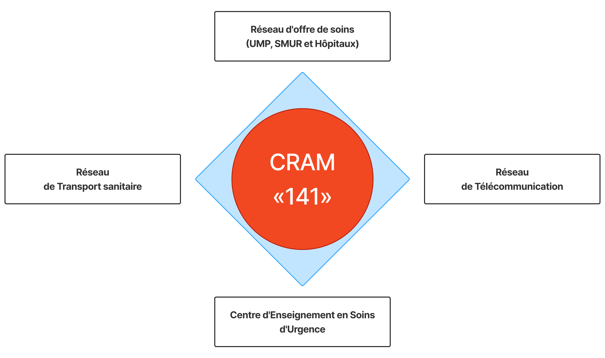

1. Mission : l'assistance médicale urgente par
- Conseil
- L'orientation
- la prise en charge
2. Principes généraux de fonctionnement
- La complémentarité entre les RISUM en fonction de leurs ressources.
- L'interopérabilité interrégionale : capacité à fonctionner ensemble et selon les mêmes normes.
- La synergie entre les différentes composantes de chaque RISUM.
- La polyvalence des ressources humaines exerçant au niveau des différentes unités composant le RISUM.
3. Les fonctions de soins d'urgence médicale sont définies selon :
- Le niveau de l'offre de soins existante,
- L'absence de structure hospitalière,
- La population desservie,
- La distance vers l'hôpital de référence.
4. Composantes du RISUM pour la région
- Les Services d'urgences hospitalières (SUH) ;
- Le Service d'Assistance Médicale Urgente (SAMU) avec son Centre de Régulation des Appels Médicaux (CRAM) et son Centre d'Enseignement des Soins d'Urgence (CESU). Cette structure pouvant être commune à plusieurs régions ;
- Les Services Mobiles Hospitaliers d'Urgence et de Réanimation dits SMUR ;
- Les Structures de Soins de Santé de Base participant aux activités médicales urgentes ;
- Les moyens de transport sanitaire mobilisés par le CRAM dans le cadre de l'activité d'Assistance Médicale Urgente (AMU).
Le SAMU des réseaux en régulation
5. Modes d'intervention du RISUM
Le RISUM accomplit sa mission selon les trois modes suivants :
- Les urgences médicales de proximité (UMP) : assurées par les centres de santé de deuxième niveau implantés dans les chefs-lieux des cercles.
- Les urgences pré-hospitalières (UPH) : assurées par les moyens de transport de secours de base, les services médicaux d'urgence et de réanimation (SMUR) et les services médicaux héliportés (HELISMUR).
- Les urgences médico-hospitalières (UMH) : qui comprennent les urgences médico hospitalières de base assurées par les centres hospitaliers préfectoraux ou provinciaux, les urgences médico-hospitalières complètes assurées par les centres régionaux et les urgences médico-hospitalières spécialisées assurées par les centres hospitaliers interrégionaux.
Remarque ! Leur régulation est assurée par les services publics d'assistance médicale urgente (SAMU).
U.M.P (7 fonctions)
- Permanence 24/24h
- Diagnostic clinique des détresses vitales ;
- Gestes et manœuvres de premier secours : massage cardiaque, Oxygène …
- Contention provisoire et immobilisation de fractures par attelles (minerves, attelles)
- Surveillance du patient (salle d’observation) ;
- Examen biologique de base ;
- Transfert sanitaire simple 24/24
UMHB (12 fonctions)
- 7 fonctions UMP
- Gestes de ressuscitation et de réanimation
- Examen complémentaire de Base
- Transfusion
- Hospitalisation
- Intervention chirurgicale (Bloc opératoire).
UMHC (16 fonctions)
- 12 fonctions UMH-B
- Fonction de réanimation hospitalière polyvalente
- Examens complémentaires complets
- Transfert SMUR
- Régulation des appels médicaux